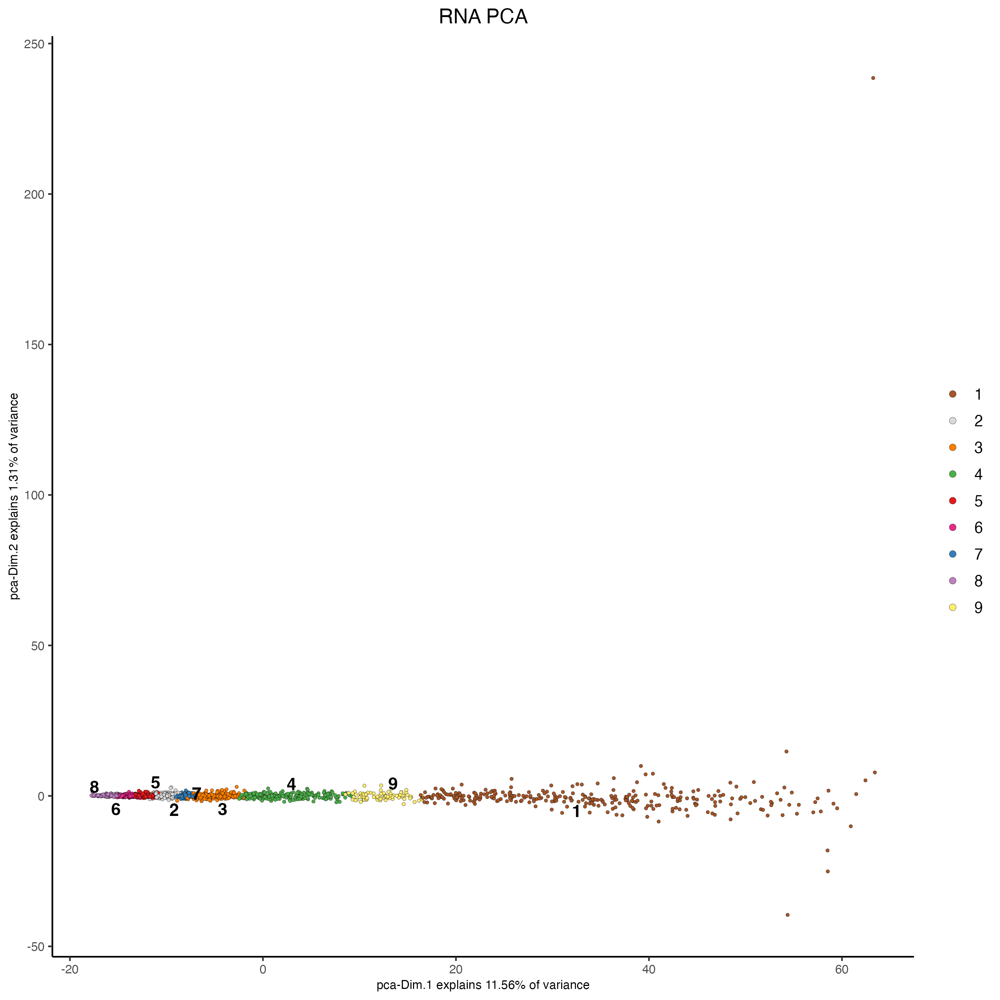
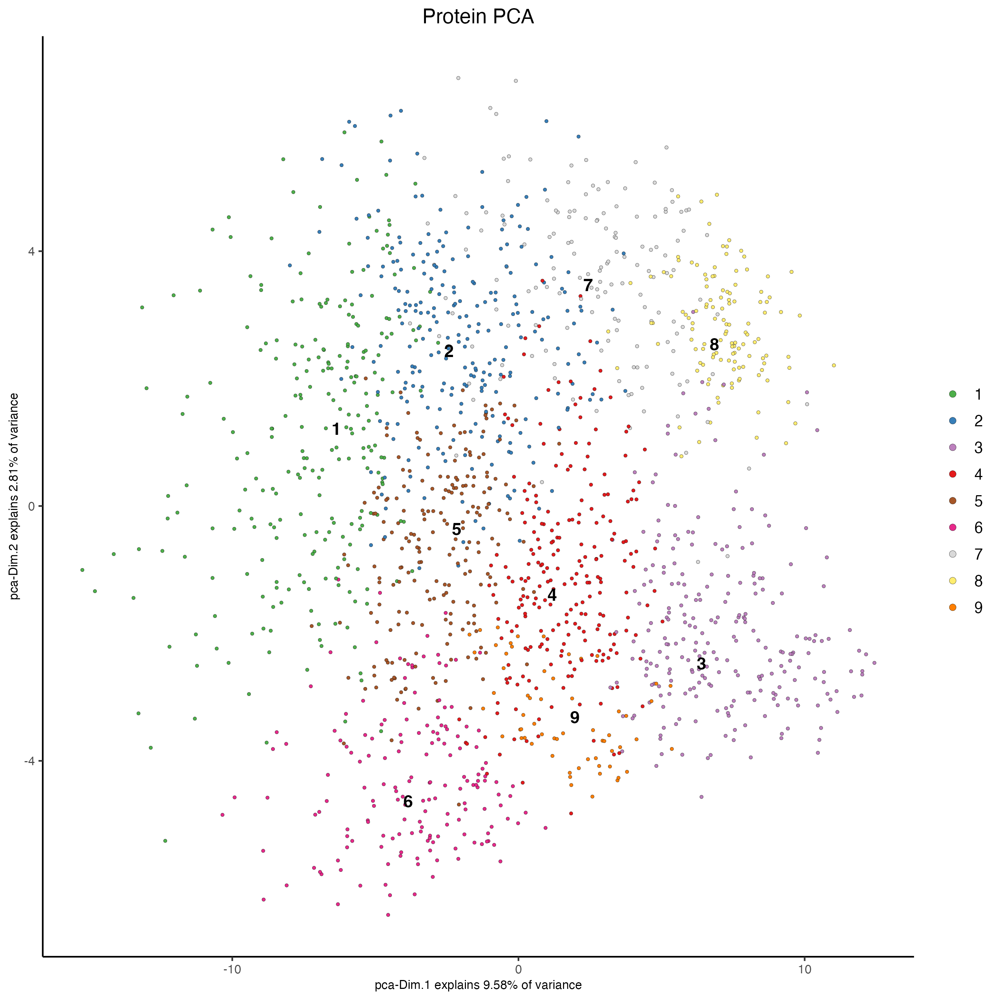
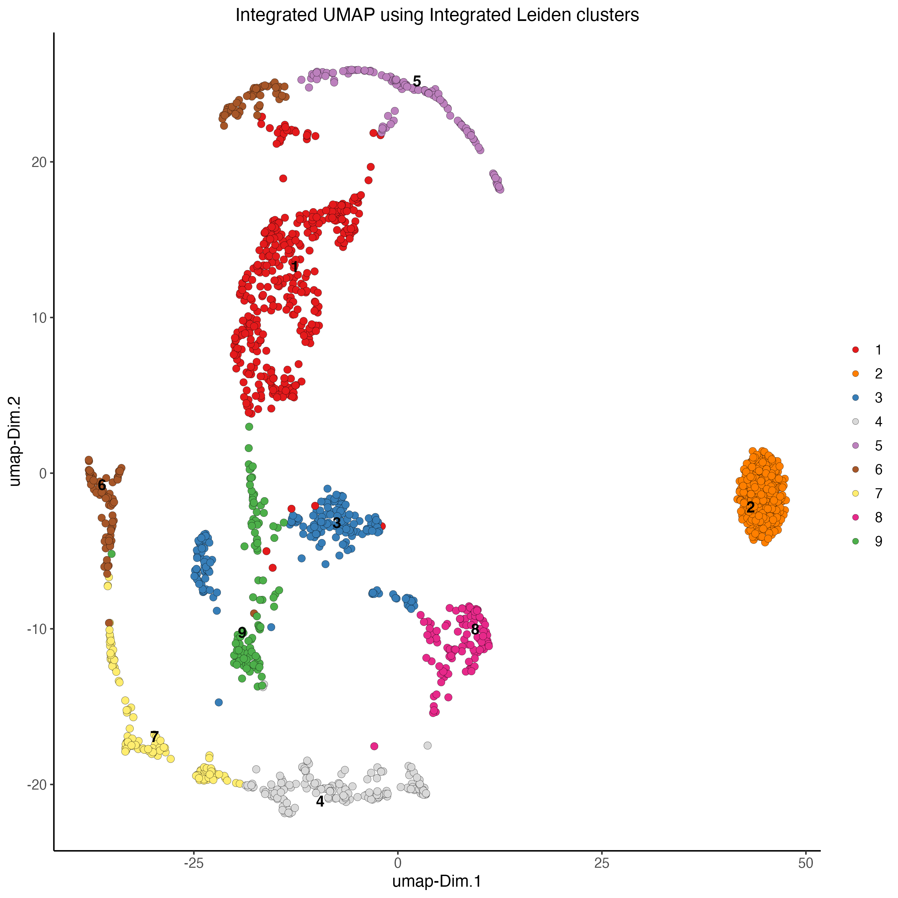
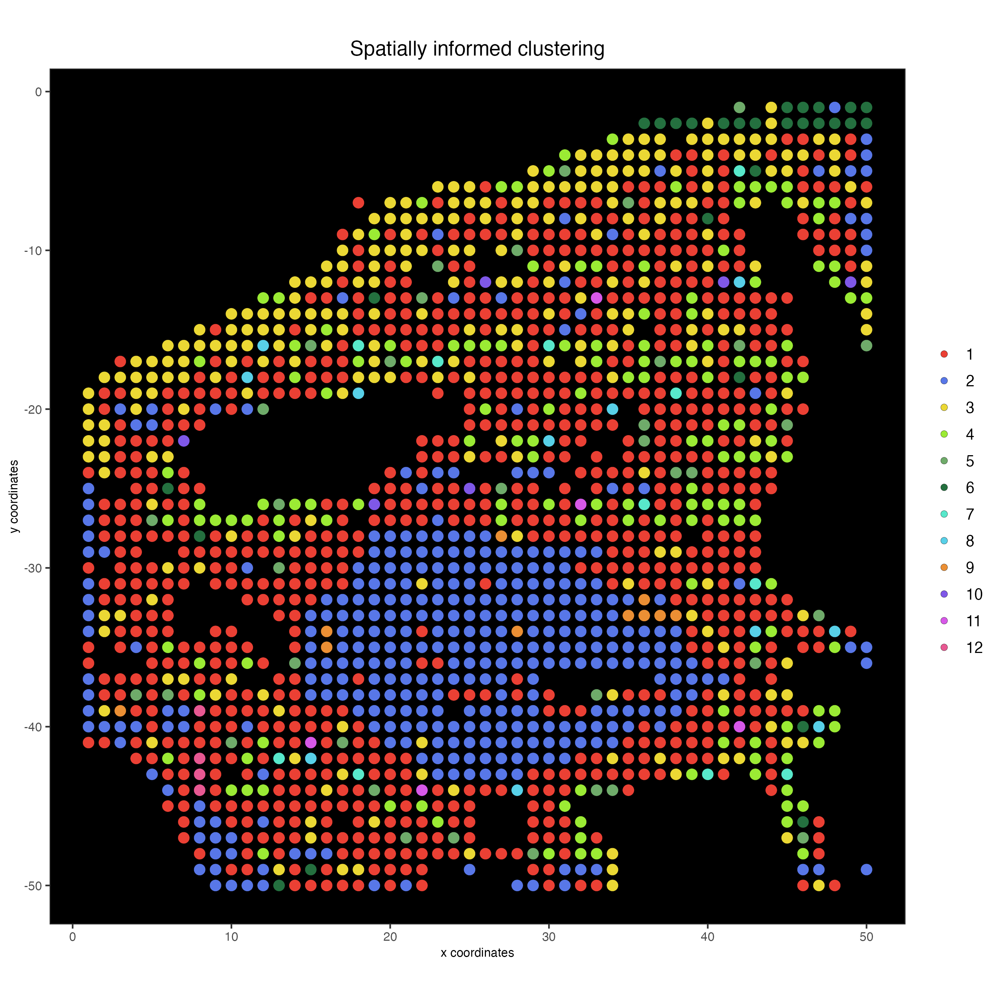

Multi-omics Spatial CITE-Seq Human skin
Source:vignettes/spatial_citeseq_human_skin.Rmd
spatial_citeseq_human_skin.Rmd1 Dataset explanation
To run this example, we will use the Skin dataset from the article High-plex protein and whole transcriptome co-mapping at cellular resolution with spatial CITE-seq. You can download the data from here. The high-resolution microscope images are available at https://doi.org/10.6084/m9.figshare.20723680
2 Start Giotto
# Ensure Giotto Suite is installed
if(!"Giotto" %in% installed.packages()) {
pak::pkg_install("drieslab/Giotto")
}
# Ensure the Python environment for Giotto has been installed
genv_exists <- Giotto::checkGiottoEnvironment()
if(!genv_exists){
# The following command need only be run once to install the Giotto environment
Giotto::installGiottoEnvironment()
}3 Create Giotto object
library(Giotto)
results_folder <- "/path/to/results/"
instructions <- createGiottoInstructions(save_plot = TRUE,
save_dir = results_folder,
show_plot = FALSE,
return_plot = FALSE)Create spatial coords table
data_path <- "/path/to/data/"
x <- data.table::fread(paste0(data_path, "GSE213264_RAW/GSM6578065_humanskin_RNA.tsv.gz"))
spatial_coords <- data.frame(cell_ID = x$X)
spatial_coords <- cbind(spatial_coords,
stringr::str_split_fixed(spatial_coords$cell_ID,
pattern = "x",
n = 2))
colnames(spatial_coords)[2:3] = c("sdimx", "sdimy")
spatial_coords$sdimx <- as.integer(spatial_coords$sdimx)
spatial_coords$sdimy <- as.integer(spatial_coords$sdimy)
spatial_coords$sdimy <- spatial_coords$sdimy*(-1)Read rna and protein expression matrix
rna_matrix <- data.table::fread(paste0(data_path, "GSE213264_RAW/GSM6578065_humanskin_RNA.tsv.gz"))
rna_matrix <- rna_matrix[rna_matrix$X %in% spatial_coords$cell_ID,]
rna_matrix <- rna_matrix[match(spatial_coords$cell_ID, rna_matrix$X),]
rna_matrix <- t(rna_matrix[,-1])
colnames(rna_matrix) <- spatial_coords$cell_ID
protein_matrix <- data.table::fread(paste0(data_path, "GSE213264_RAW/GSM6578074_humanskin_protein.tsv.gz"))
protein_matrix <- protein_matrix[protein_matrix$X %in% spatial_coords$cell_ID,]
protein_matrix <- protein_matrix[match(spatial_coords$cell_ID, protein_matrix$X),]
protein_matrix <- t(protein_matrix[,-1])
colnames(protein_matrix) <- spatial_coords$cell_IDCreate Giotto object using RNA and Protein expression, as well as spatial positions
my_giotto_object <- createGiottoObject(expression = list(rna = list(raw = rna_matrix),
protein = list(raw = protein_matrix)),
expression_feat = list("rna", "protein"),
spatial_locs = spatial_coords,
instructions = instructions)Add tissue image
my_giotto_image <- createGiottoImage(gobject = my_giotto_object,
do_manual_adj = TRUE,
scale_factor = 0.5,
mg_object = paste0(data_path, "skin.jpg"),
negative_y = TRUE)
my_giotto_object <- addGiottoImage(gobject = my_giotto_object,
images = list(my_giotto_image),
spat_loc_name = "raw")Visualize image
spatPlot2D(my_giotto_object,
point_size = 3.5)
4 Processing
4.1 Filtering
# RNA
my_giotto_object <- filterGiotto(gobject = my_giotto_object,
spat_unit = "cell",
feat_type = "rna",
expression_threshold = 1,
feat_det_in_min_cells = 1,
min_det_feats_per_cell = 1)
# Protein
my_giotto_object <- filterGiotto(gobject = my_giotto_object,
spat_unit = "cell",
feat_type = "protein",
expression_threshold = 1,
feat_det_in_min_cells = 1,
min_det_feats_per_cell = 1)4.2 Normalization
# RNA
my_giotto_object <- normalizeGiotto(gobject = my_giotto_object,
spat_unit = "cell",
feat_type = "rna",
norm_methods = "standard",
scalefactor = 10000,
verbose = TRUE)
# Protein
my_giotto_object <- normalizeGiotto(gobject = my_giotto_object,
spat_unit = "cell",
feat_type = "protein",
scalefactor = 6000,
verbose = TRUE)4.3 Statistics
# RNA
my_giotto_object <- addStatistics(gobject = my_giotto_object,
spat_unit = "cell",
feat_type = "rna")
# Protein
my_giotto_object <- addStatistics(gobject = my_giotto_object,
spat_unit = "cell",
feat_type = "protein",
expression_values = "normalized")5 Dimension Reduction
5.1 Principal component analysis (PCA)
# RNA
my_giotto_object <- runPCA(gobject = my_giotto_object,
spat_unit = "cell",
feat_type = "rna",
expression_values = "normalized",
reduction = "cells",
name = "rna.pca")
# Protein
my_giotto_object <- runPCA(gobject = my_giotto_object,
spat_unit = "cell",
feat_type = "protein",
expression_values = "normalized",
scale_unit = TRUE,
center = FALSE,
method = "factominer")6 Clustering
6.1 Uniform manifold approximation projection (UMAP)
# RNA
my_giotto_object <- runUMAP(gobject = my_giotto_object,
spat_unit = "cell",
feat_type = "rna",
expression_values = "normalized",
reduction = "cells",
dimensions_to_use = 1:10,
dim_reduction_name = "rna.pca")
# Protein
my_giotto_object <- runUMAP(gobject = my_giotto_object,
spat_unit = "cell",
feat_type = "protein",
expression_values = "normalized",
dimensions_to_use = 1:10)6.2 Create nearest network
# RNA
my_giotto_object <- createNearestNetwork(gobject = my_giotto_object,
spat_unit = "cell",
feat_type = "rna",
type = "sNN",
dim_reduction_to_use = "pca",
dim_reduction_name = "rna.pca",
dimensions_to_use = 1:10,
k = 20)
# Protein
my_giotto_object <- createNearestNetwork(gobject = my_giotto_object,
spat_unit = "cell",
feat_type = "protein",
type = "sNN",
name = "protein_sNN.pca",
dimensions_to_use = 1:10,
k = 20)6.3 Find Leiden clusters
# RNA
my_giotto_object <- doLeidenCluster(gobject = my_giotto_object,
spat_unit = "cell",
feat_type = "rna",
nn_network_to_use = "sNN",
name = "leiden_clus",
resolution = 1)
# Protein
my_giotto_object <- doLeidenCluster(gobject = my_giotto_object,
spat_unit = "cell",
feat_type = "protein",
nn_network_to_use = "sNN",
network_name = "protein_sNN.pca",
name = "leiden_clus",
resolution = 1)6.4 Plot PCA
# RNA
plotPCA(gobject = my_giotto_object,
spat_unit = "cell",
feat_type = "rna",
dim_reduction_name = "rna.pca",
cell_color = "leiden_clus",
title = "RNA PCA")
# Protein
plotPCA(gobject = my_giotto_object,
spat_unit = "cell",
feat_type = "protein",
dim_reduction_name = "protein.pca",
cell_color = "leiden_clus",
title = "Protein PCA")
6.5 Plot UMAP
# RNA
plotUMAP(gobject = my_giotto_object,
spat_unit = "cell",
feat_type = "rna",
cell_color = "leiden_clus",
point_size = 2,
title = "RNA Uniform Manifold Approximation & Projection (UMAP)",
axis_title = 12,
axis_text = 10 )
# Protein
plotUMAP(gobject = my_giotto_object,
spat_unit = "cell",
feat_type = "protein",
cell_color = "leiden_clus",
dim_reduction_name = "protein.umap",
point_size = 2,
title = "Protein Uniform Manifold Approximation & Projection (UMAP)",
axis_title = 12,
axis_text = 10 )6.6 Plot spatial locations by cluster
# RNA
spatPlot2D(my_giotto_object,
show_image = TRUE,
point_size = 3.5,
cell_color = "leiden_clus",
title = "RNA Leiden clustering")
# Protein
spatPlot2D(my_giotto_object,
spat_unit = "cell",
feat_type = "protein",
cell_color = "leiden_clus",
point_size = 3.5,
show_image = TRUE,
title = "Protein Leiden clustering")
7 Multi-omics integration
7.1 Create nearest network
my_giotto_object <- createNearestNetwork(gobject = my_giotto_object,
spat_unit = "cell",
feat_type = "rna",
type = "kNN",
dim_reduction_name = "rna.pca",
name = "rna_kNN.pca",
dimensions_to_use = 1:10,
k = 20)
my_giotto_object <- createNearestNetwork(gobject = my_giotto_object,
spat_unit = "cell",
feat_type = "protein",
type = "kNN",
name = "protein_kNN.pca",
dimensions_to_use = 1:10,
k = 20)7.2 Calculate WNN
my_giotto_object <- runWNN(my_giotto_object,
modality_1 = "rna",
modality_2 = "protein",
pca_name_modality_1 = "rna.pca",
pca_name_modality_2 = "protein.pca",
k = 20)7.3 Create integrated UMAP
my_giotto_object <- runIntegratedUMAP(my_giotto_object,
modality1 = "rna",
modality2 = "protein")7.4 Calculate Leiden clusters
my_giotto_object <- doLeidenCluster(gobject = my_giotto_object,
spat_unit = "cell",
feat_type = "rna",
nn_network_to_use = "kNN",
network_name = "integrated_kNN",
name = "integrated_leiden_clus",
resolution = 0.7)7.5 Plot integrated UMAP
plotUMAP(gobject = my_giotto_object,
spat_unit = "cell",
feat_type = "rna",
cell_color = "integrated_leiden_clus",
dim_reduction_name = "integrated.umap",
point_size = 2.5,
title = "Integrated UMAP using Integrated Leiden clusters",
axis_title = 12,
axis_text = 10)
7.6 Plot integrated spatial locations by cluster
spatPlot2D(my_giotto_object,
spat_unit = "cell",
feat_type = "rna",
cell_color = "integrated_leiden_clus",
point_size = 3.5,
show_image = TRUE,
title = "Integrated Leiden clustering")
8 Calculate spatially variable genes
my_giotto_object <- createSpatialNetwork(gobject = my_giotto_object,
method = "kNN",
k = 6,
maximum_distance_knn = 5,
name = "spatial_network")
rank_spatialfeats <- binSpect(my_giotto_object,
bin_method = "rank",
calc_hub = TRUE,
hub_min_int = 5,
spatial_network_name = "spatial_network")
spatFeatPlot2D(my_giotto_object,
expression_values = "scaled",
feats = rank_spatialfeats$feats[1:6],
cow_n_col = 2,
point_size = 1.5)8.1 Spatially correlated genes
# 3.1 cluster the top 500 spatial genes into 20 clusters
ext_spatial_genes <- rank_spatialfeats[1:500,]$feats
# here we use existing detectSpatialCorGenes function to calculate pairwise distances between genes (but set network_smoothing=0 to use default clustering)
spat_cor_netw_DT <- detectSpatialCorFeats(my_giotto_object,
method = "network",
spatial_network_name = "spatial_network",
subset_feats = ext_spatial_genes)
# 3.3 identify potential spatial co-expression
spat_cor_netw_DT <- clusterSpatialCorFeats(spat_cor_netw_DT,
name = "spat_netw_clus",
k = 3)
# visualize clusters
heatmSpatialCorFeats(my_giotto_object,
spatCorObject = spat_cor_netw_DT,
use_clus_name = "spat_netw_clus",
heatmap_legend_param = list(title = NULL),
save_param = list(base_height = 6,
base_width = 8,
units = "cm"))9 Metagenes/co-expression modules
# 3.4 create metagenes / co-expression modules
cluster_genes <- getBalancedSpatCoexpressionFeats(spat_cor_netw_DT,
maximum = 30)
my_giotto_object <- createMetafeats(my_giotto_object,
feat_clusters = cluster_genes,
name = "cluster_metagene")
spatCellPlot(my_giotto_object,
spat_enr_names = "cluster_metagene",
cell_annotation_values = as.character(c(1:7)),
point_size = 1,
cow_n_col = 3)
10 Spatially informed clustering
my_spatial_genes = names(cluster_genes)
my_giotto_object <- runPCA(gobject = my_giotto_object,
feats_to_use = my_spatial_genes,
name = "custom_pca")
my_giotto_object <- runUMAP(my_giotto_object,
dim_reduction_name = "custom_pca",
dimensions_to_use = 1:20,
name = "custom_umap")
my_giotto_object <- createNearestNetwork(gobject = my_giotto_object,
dim_reduction_name = "custom_pca",
dimensions_to_use = 1:20,
k = 3,
name = "custom_NN")
my_giotto_object <- doLeidenCluster(gobject = my_giotto_object,
network_name = "custom_NN",
resolution = 0.1,
n_iterations = 1000,
name = "custom_leiden")
spatPlot2D(my_giotto_object,
show_image = FALSE,
cell_color = "custom_leiden",
cell_color_code = c("#eb4034",
"#5877e8",
"#ebd834",
"#9beb34",
"#6fab6a",
"#24703f",
"#58e8cb",
"#58d0e8",
"#eb8f34",
"#7f58e8",
"#d758e8",
"#e85892"),
point_size = 3.5,
background_color = "black",
title = "Spatially informed clustering")
11 Session Info
R version 4.3.2 (2023-10-31)
Platform: aarch64-apple-darwin20 (64-bit)
Running under: macOS Sonoma 14.2.1
Matrix products: default
BLAS: /System/Library/Frameworks/Accelerate.framework/Versions/A/Frameworks/vecLib.framework/Versions/A/libBLAS.dylib
LAPACK: /Library/Frameworks/R.framework/Versions/4.3-arm64/Resources/lib/libRlapack.dylib; LAPACK version 3.11.0
locale:
[1] en_US.UTF-8/en_US.UTF-8/en_US.UTF-8/C/en_US.UTF-8/en_US.UTF-8
time zone: America/New_York
tzcode source: internal
attached base packages:
[1] stats graphics grDevices utils datasets methods base
other attached packages:
[1] Giotto_4.0.3 GiottoClass_0.1.3
loaded via a namespace (and not attached):
[1] colorRamp2_0.1.0 bitops_1.0-7 rlang_1.1.3 magrittr_2.0.3
[5] clue_0.3-65 GetoptLong_1.0.5 GiottoUtils_0.1.5 matrixStats_1.2.0
[9] compiler_4.3.2 png_0.1-8 systemfonts_1.0.5 vctrs_0.6.5
[13] stringr_1.5.1 shape_1.4.6 pkgconfig_2.0.3 SpatialExperiment_1.12.0
[17] crayon_1.5.2 fastmap_1.1.1 backports_1.4.1 magick_2.8.3
[21] XVector_0.42.0 labeling_0.4.3 utf8_1.2.4 rmarkdown_2.25
[25] ragg_1.2.7 xfun_0.42 zlibbioc_1.48.0 beachmat_2.18.1
[29] GenomeInfoDb_1.38.6 jsonlite_1.8.8 flashClust_1.01-2 DelayedArray_0.28.0
[33] BiocParallel_1.36.0 terra_1.7-71 irlba_2.3.5.1 parallel_4.3.2
[37] cluster_2.1.6 R6_2.5.1 RColorBrewer_1.1-3 stringi_1.8.3
[41] reticulate_1.35.0 GenomicRanges_1.54.1 estimability_1.5 iterators_1.0.14
[45] Rcpp_1.0.12 SummarizedExperiment_1.32.0 knitr_1.45 R.utils_2.12.3
[49] FNN_1.1.4 IRanges_2.36.0 igraph_2.0.2 Matrix_1.6-5
[53] tidyselect_1.2.0 rstudioapi_0.15.0 abind_1.4-5 yaml_2.3.8
[57] doParallel_1.0.17 codetools_0.2-19 lattice_0.22-5 tibble_3.2.1
[61] Biobase_2.62.0 withr_3.0.0 evaluate_0.23 circlize_0.4.16
[65] pillar_1.9.0 MatrixGenerics_1.14.0 foreach_1.5.2 checkmate_2.3.1
[69] DT_0.32 stats4_4.3.2 dbscan_1.1-12 generics_0.1.3
[73] RCurl_1.98-1.14 S4Vectors_0.40.2 ggplot2_3.4.4 munsell_0.5.0
[77] scales_1.3.0 gtools_3.9.5 xtable_1.8-4 leaps_3.1
[81] glue_1.7.0 emmeans_1.10.0 scatterplot3d_0.3-44 tools_4.3.2
[85] GiottoVisuals_0.1.4 data.table_1.15.0 ScaledMatrix_1.10.0 mvtnorm_1.2-4
[89] Cairo_1.6-2 cowplot_1.1.3 grid_4.3.2 colorspace_2.1-0
[93] SingleCellExperiment_1.24.0 GenomeInfoDbData_1.2.11 BiocSingular_1.18.0 cli_3.6.2
[97] rsvd_1.0.5 textshaping_0.3.7 fansi_1.0.6 S4Arrays_1.2.0
[101] ComplexHeatmap_2.18.0 dplyr_1.1.4 uwot_0.1.16 gtable_0.3.4
[105] R.methodsS3_1.8.2 digest_0.6.34 BiocGenerics_0.48.1 SparseArray_1.2.4
[109] ggrepel_0.9.5 htmlwidgets_1.6.4 FactoMineR_2.9 rjson_0.2.21
[113] farver_2.1.1 htmltools_0.5.7 R.oo_1.26.0 lifecycle_1.0.4
[117] multcompView_0.1-9 GlobalOptions_0.1.2 MASS_7.3-60.0.1